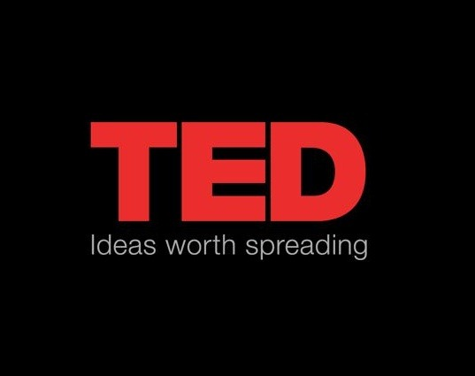
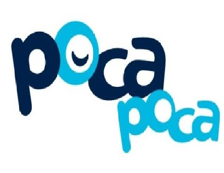

Pagina 1
Una buena plataforma en donde encontraras temas relacionadas con educacion que se basan en testimonios de maestros,psicologos, cientificos y pedagogos,nos dejan un visto muy bueno de lo que quieren transmitir,en especial me gusto mucho uno de Mario Alonso Puig donde nos relata que en todo ser humano hay grandeza.
VER PAGINAPagina2
Sin duda TED ofrece muchas charlas por grandes oradores que tienen muchos temas de interes y nos ayudan a tener curiosidad por ir descubriendo nuevas cosas,evidentemente una plataforma que te ofrece un buen de areas para conocer y poder disfrutar comodamente en tu casa como es que piensan esas grandes personas.
VER PAGINAPagina3
Como ya todos lo conocemos,ofrece un sin fin de videos que nos proporcionan programas,videos musicales,blogs de casi cualquier cosa,ademas de que ofrece utilidades si quieres tener un canal propio.
VER PAGINAPagina4
Una plataforma que fue lanzada hace poco por un profesor llamado Fernando Manso y sus colaboradores,que cuando estas en apuros de entender algo de electronica el te servira para solucionar con buen humor los temas y una buena habilidad pedagogica que te haran disfrutar de sus videos,ademas de que ofrecen tutorias.
VER PAGINAPagina5

Udemy,tus mano derecha en tiempos de ingenieria que te brindara cursos a bajo costo relacionados con marketing,programacion,diseño,etc.Te complementara con nuevas tecnologias que van saliendo dia a dia para tu desarrollo personal ademas de poder tomar otros cursos de distintas areas.
VER PAGINA